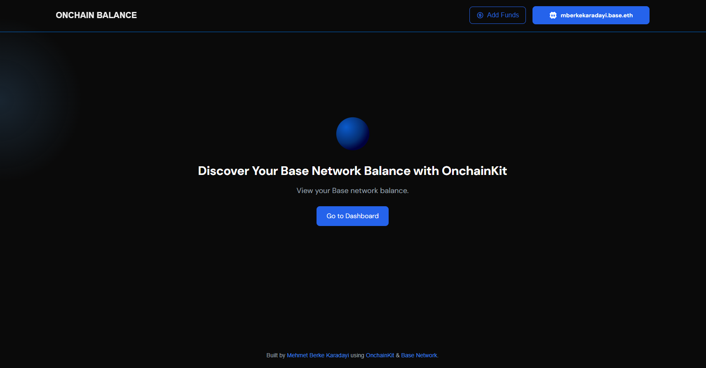
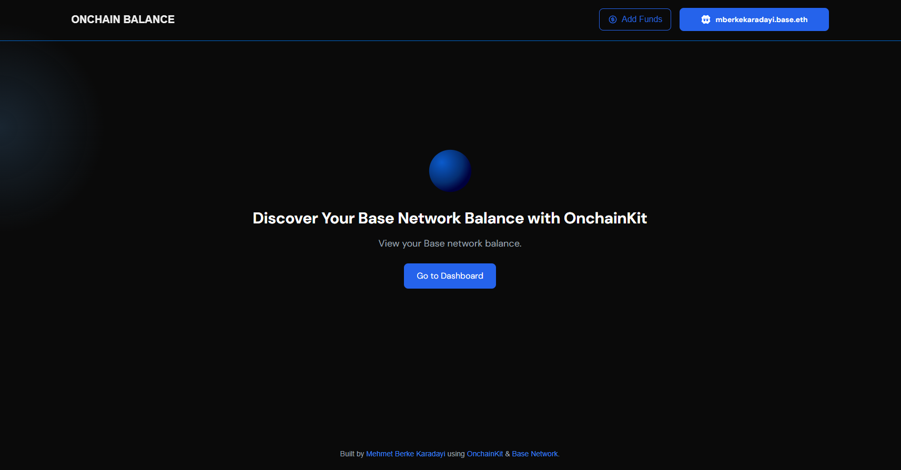
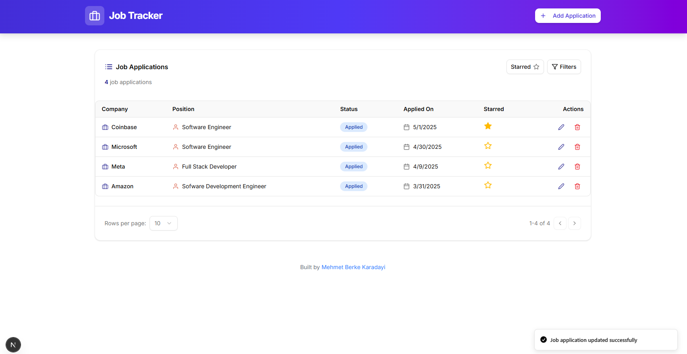
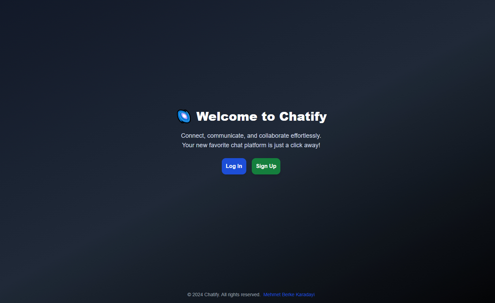

I'm a recent graduate in Electrical and Computer Engineering from
the University of British Columbia. I'm an extroverted, dedicated,
and open-minded individual who thrives in dynamic environments and
communicates effectively across teams. Alongside my academic
journey, I have built strong skills in software engineering and
full-stack development through hackathons, self-learning, online
courses, and hands-on projects. Outside of tech, I have a passion
for sports, particularly football, which I enjoy watching in my
spare time.
 

This is a Web3-enabled dashboard built with Next.js, Tailwind CSS, Coinbase OnchainKit, and the Alchemy SDK. It showcases onchain identity and wallet authentication, allowing users to connect wallets, view ERC-20 tokens on the Base Network, and fund them with ETH or fiat. The dashboard fetches token balances in real time and includes features like sorting, pagination, and dark mode. It offers a responsive, intuitive UI that highlights modern Web3 integration, blockchain data visualization, and user-centered design principles.

A full-stack job application tracker built with Next.js, TypeScript, Ruby on Rails, and PostgreSQL. It helps users manage their job search with features like adding or editing applications, starring important roles, and filtering by status. Pagination supports large lists, and the interface is fully responsive, styled with Tailwind CSS and shadcn/ui. The design emphasizes clarity and ease of use, incorporating toast notifications and interactive UI elements to provide a seamless experience for tracking job search progress.

A real-time messaging platform built with Next.js, Node.js and PostgreSQL. It offers secure user authentication, allowing users to sign in and engage in one-on-one conversations. Messages are persistent and support deletion with confirmation. Additional features include a searchable contact list, user avatars, timestamps, and responsive design. The app delivers a clean and engaging chat experience, focusing on intuitive UI and real-time communication through WebSocket integration for seamless message flow.

A responsive React-based application that displays real-time weather data using the OpenWeather API. It dynamically adjusts its background and logo based on the user’s location and weather conditions. The app features a search bar that retrieves temperature, weather description, humidity, feels-like value, and wind speed. Styled with Tailwind CSS, the app uses React hooks like useState and useEffect to manage state and handle API calls efficiently via Axios, offering a visually engaging and informative experience.